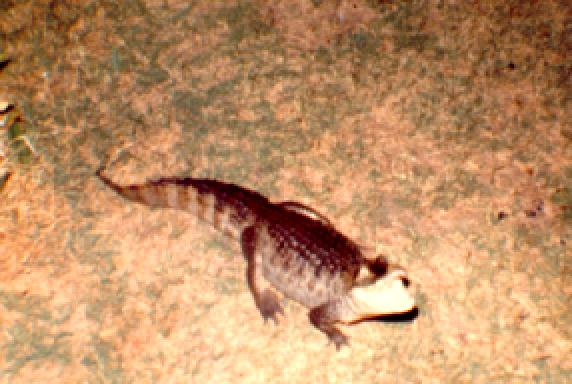
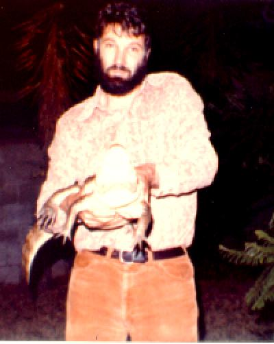
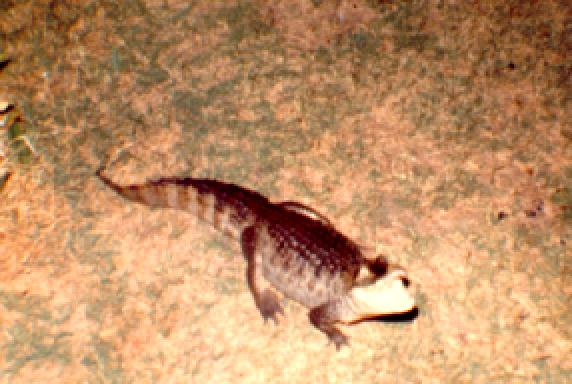
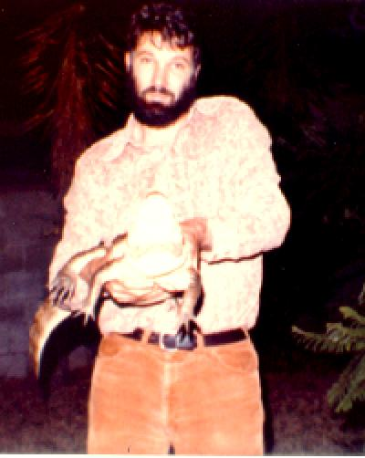

The Rosa Maria Garcia Memorial Page
 The formidable lass above and frolicking with me below is the late and
much lamented Miss Rosa Maria Garcia with whom I lived from 1977 to
1982. Of Latin American heritage, being a
spectacled caiman
(Caiman crocodilus crocodilus), she was a very important
part of the social life of North Hollywood CA during her
time there. Her many friends
still miss her. I take some comfort in
knowing that when she went west part of me went with her.
The formidable lass above and frolicking with me below is the late and
much lamented Miss Rosa Maria Garcia with whom I lived from 1977 to
1982. Of Latin American heritage, being a
spectacled caiman
(Caiman crocodilus crocodilus), she was a very important
part of the social life of North Hollywood CA during her
time there. Her many friends
still miss her. I take some comfort in
knowing that when she went west part of me went with her.
 



 Back to my home page
Back to my home page
Back to high and low
cultural links